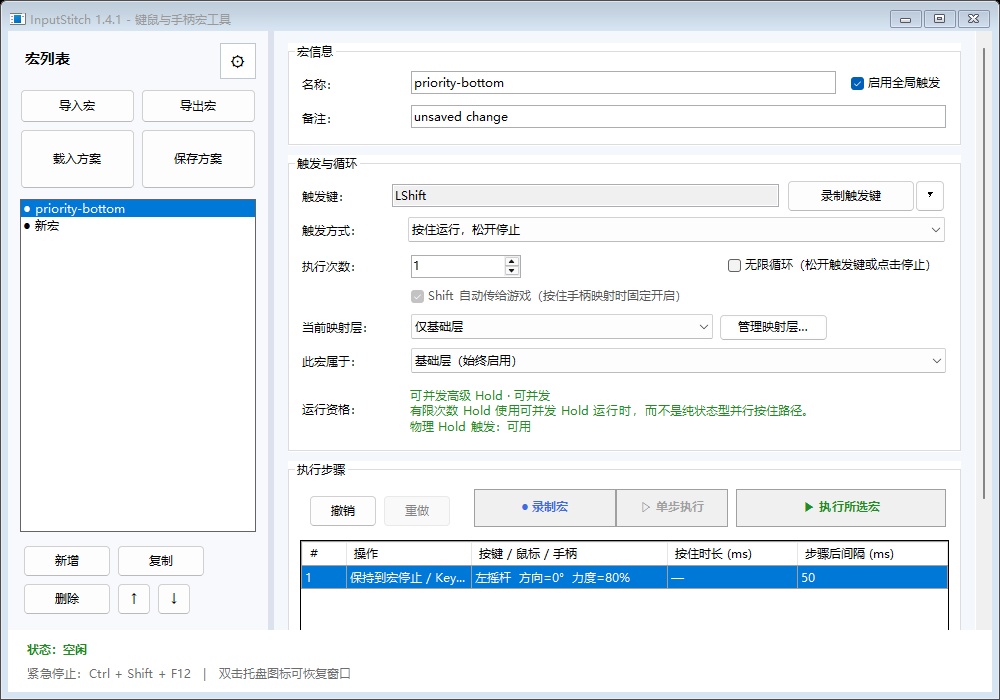
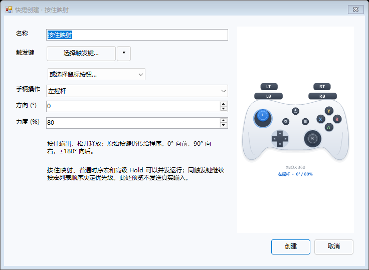
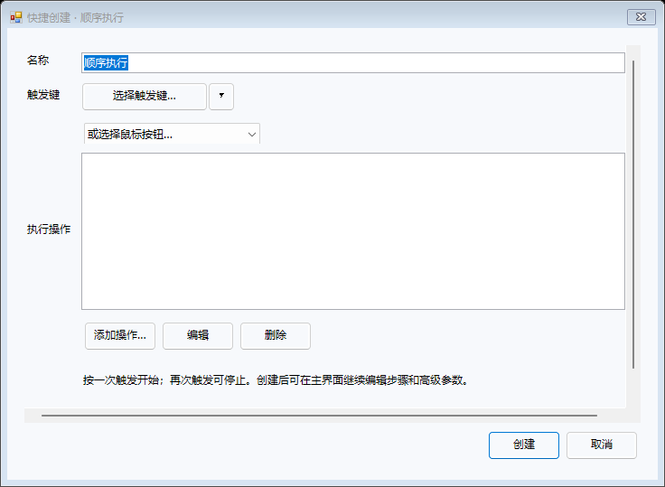
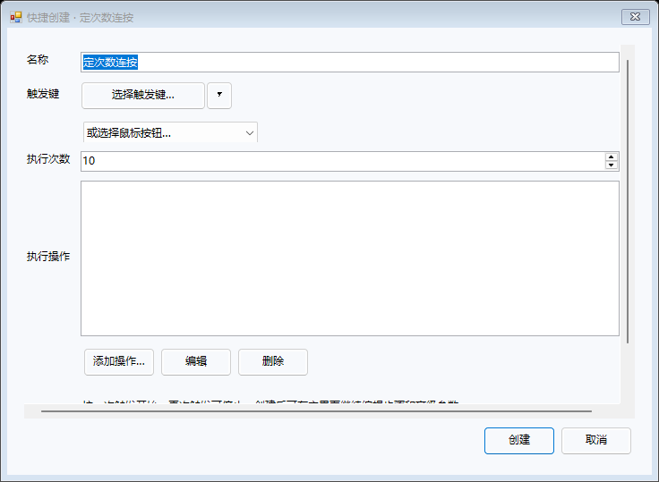

⌨
键鼠宏与精确时序Keyboard & mouse timelines
录制或手动编辑按键、鼠标键、侧键和滚轮；逐步设置按住时间、间隔、次数、Toggle 或 Hold。
Record or edit keys, mouse buttons, side buttons and wheel actions with per-step hold time, delay, repeat, Toggle and Hold behavior.
InputStitch 是面向 Windows 的精确输入编排与宏平台。把键盘、鼠标和手柄统一进一套可并发、可观察、可恢复的运行系统——从最简单的“按这个 → 输出那个”，到多宏、多来源和虚拟手柄的复杂组合。
InputStitch is a deterministic input orchestration and macro platform for Windows. Bring keyboard, mouse and controllers into one concurrent, observable and recoverable runtime—from a simple “press this → send that” mapping to multi-source automation and virtual gamepad output.
InputStitch 不以“功能数量”作为唯一目标，而是把并发、状态合并、安全停止和可解释性做成运行架构的一部分。
InputStitch is built around concurrency, state ownership, safe cleanup and explainable runtime behavior—not just a checklist of remapping features.
录制或手动编辑按键、鼠标键、侧键和滚轮；逐步设置按住时间、间隔、次数、Toggle 或 Hold。
Record or edit keys, mouse buttons, side buttons and wheel actions with per-step hold time, delay, repeat, Toggle and Hold behavior.
多个普通时序宏、复杂 Hold 和 Held Mapping 可以同时运行，各自拥有独立 RunId / SourceId 与停止状态。
Timed macros, advanced Holds and Held Mappings can run at once with independent run/source identity and stop state.
一个宏结束时只释放自己的贡献，不会把另一个仍在保持的按键、扳机、摇杆或方向键一起清掉。
When one source ends, it removes only its own contribution instead of neutralizing outputs still owned by another source.
创建任意多个命名映射层，为键盘、鼠标或手柄设置切换触发；基础层始终有效，活动层按需叠加。
Create named layers with keyboard, mouse or controller switch triggers. Base stays eligible while one active layer is added.
XInput 手柄可以触发键鼠/混合宏；需要时输出 Xbox 360 或 DualShock 4，不需要时可完全关闭虚拟手柄创建。
Use XInput controls as triggers and optionally output Xbox 360 or DualShock 4. Keyboard/mouse-only mode can create no virtual pad at all.
查看当前运行实例、来源、合并后的输出和活动映射层；普通时序宏还能单步执行，复杂行为不再靠猜。
Inspect active runs, sources, merged output and layers. Step through ordinary timelines to debug behavior deliberately.
InputStitch 记录每一个来源正在要求什么，再把它们按明确规则合并。这样多个输入同时存在时，结果仍然可预测。
InputStitch tracks what every source currently owns, then combines those contributions with explicit rules. Concurrent input remains predictable.

常见需求可以从快捷创建进入：按住映射、顺序执行、重复动作。创建后仍能在主界面继续精调。
Common workflows begin with Quick Create: held mapping, ordered sequence or repeat. Fine-tune the result later in the full editor.

触发键按着多久，输出就维持多久。Keep an output active while the trigger is physically held.

把多个动作按精确时序串成一条流程。Chain several actions into a precise timeline.

固定次数或持续循环，按你的触发方式停止。Repeat a defined action finitely or continuously.
从配置保存、更新，到宏停止和实验性手柄接管，InputStitch 尽量遵循同一个原则：先准备与验证，再改变状态；失败就回滚或恢复。
From configuration and updates to macro cleanup and experimental controller takeover, InputStitch follows a consistent pattern: prepare, verify, mutate, verify, recover.
普通运行结束只清理自己的输出贡献，全局中和只留给真正的全局紧急停止。Ordinary completion cleans only that source. Global neutralization is reserved for an actual global stop.
运行观察显示宏实例、来源、层、路由和最终输出，减少“它为什么还按着”的黑箱感。Runtime Observation exposes runs, sources, layers, routing and merged output so persistent state is not a black box.
只做键鼠宏时，可以选择“不创建虚拟手柄”，不因为保存过手柄步骤就强行初始化 ViGEm。Keyboard/mouse workflows can explicitly create no virtual controller instead of initializing ViGEm unnecessarily.
实验性设备接管采用事务、健康监测与恢复日志；实体硬件验收未完成的部分也明确保留 Experimental 标记。Experimental takeover uses transactions, health checks and recovery journals, while unvalidated hardware behavior remains explicitly Experimental.
下载便携版，第一次使用不需要安装器。只做键盘/鼠标宏也不需要额外虚拟手柄驱动；需要虚拟手柄输出时，再按教程安装 ViGEmBus。
Download the portable executable—no installer is required. Keyboard/mouse automation needs no virtual gamepad driver; add ViGEmBus only when you actually need virtual controller output.